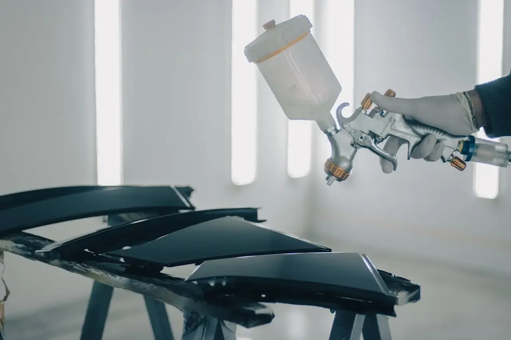

Профессиональное восстановление геометрии кузова и заводского лакокрасочного покрытия. Ремонт после ДТП любой сложности.
Рассчитать стоимостьАвтосервис «Геометрия» в Красноярске — это место, где ваш автомобиль обретает вторую жизнь после повреждений. Мы понимаем, что кузовной ремонт — это не просто покраска, это сложный технологический процесс, от которого зависит ваша безопасность на дороге.
Наша специализация — высокоточное восстановление геометрии кузова на стапеле, удаление вмятин, пайка пластика и профессиональная покраска автомобилей. Мы используем только проверенные материалы премиум-сегмента и строго соблюдаем технологии подготовки и нанесения ЛКП.
Наша цель — сделать так, чтобы следы ремонта были незаметны даже для профессиональных толщиномеров и автоэкспертов.

Сложное восстановление геометрии кузова после тяжелых ДТП. Вытяжка лонжеронов, стоек и диагоналей по заводским контрольным точкам.
Полная и локальная покраска деталей в профессиональной камере. Точный компьютерный подбор цвета. Переходы, которые не видно.
Восстановление пластиковых элементов любой сложности: пайка трещин, ремонт разорванных бамперов и восстановление крепежей.
Глубокая восстановительная полировка кузова, устранение царапин и голограмм. Нанесение защитных керамических покрытий.
Оставьте данные, и мы свяжемся с вами для точной оценки стоимости и сроков ремонта вашего автомобиля.
+7 (923) 333-04-10
г. Красноярск, ул. Северное шоссе 43, стр 4
Пн-Сб: 09:00 - 19:00